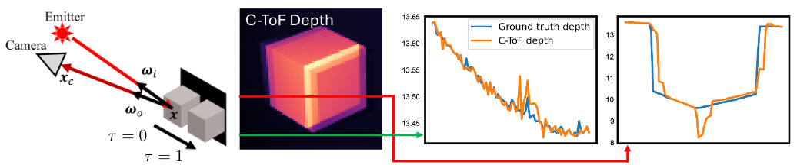
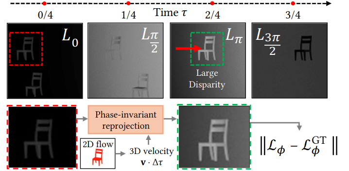

F-TöRF Flowed Time of Flight Radiance Fields
European Conference on Computer Vision (ECCV) 2024
Abstract
Flowed time of flight radiance fields (F-TöRF) is a method to correct for motion artifacts in continuous-wave time of flight imaging (C-ToF). As C-ToF cameras must capture multiple exposures over time to derive depth, any moving object will exhibit depth errors. We formulate an optimization problem to reconstruct the raw frames captured by the camera via an underlying 4D volumetric scene and a physically-based differentiable C-ToF simulator. With weak optical flow supervision, we can infer a 3D volume with scene flow that explains the raw captures, even though any particular time instant does not provide sufficient constraints upon the depth or motion. On synthetic sequences, we find that our approach reduces depth errors on dynamic objects by up to 20× compared to C-ToF, particularly for axial motions and large disparities (≥ 25 pixels) between raw frames. On real-world sequences, we see qualitatively similar gains with artifacts resolved on falling pillows and swinging baseball bats.
Problem
C-ToF's imaging model assumes that the scene and the camera are static: because we must estimate the phase offsets from multiple frames, depth is inaccurate if anything moves, causing large errors such as ghosting or blurring under fast motion. This affects objects that move relative to the camera, and also any motion of the camera itself relative to the scene—static or otherwise—such as the handheld motion of a smartphone. See the example below.

Our Proposal
To correct the C-ToF moving-object artifacts, we learn a 3D scene flow and use it to reproject the scene at time moments aligned with the desynchronised ToF exposures. We call this phase-invariant reprojection. As a side effect, we can also temporally upsample the video at an arbitrary rate.

Video
Results
Code + Data
We release our code and the captured continuous-wave time-of-flight data for the scenes we evaluate.
- Code — our implementation of F-TöRF.
- Scene data — our captured real and synthetic sequences.
Citation
@inbook{Okunev_2024,
title = {Flowed Time of Flight Radiance Fields},
author = {Okunev, Mikhail and Mapeke, Marc and Attal, Benjamin and Richardt, Christian and O'Toole, Matthew and Tompkin, James},
booktitle = {Computer Vision -- ECCV 2024},
publisher = {Springer Nature Switzerland},
isbn = {9783031730337},
issn = {1611-3349},
doi = {10.1007/978-3-031-73033-7_21},
pages = {373--389},
year = {2024},
month = oct
}Acknowledgements
Mikhail Okunev and James Tompkin thank NSF CAREER 2144956 and Cognex. Marc Mapeke acknowledges support from a Jack Kent Cooke Foundation scholarship, and Benjamin Attal from a Meta Research PhD Fellowship. Matthew O'Toole thanks NSF CAREER 2238485.